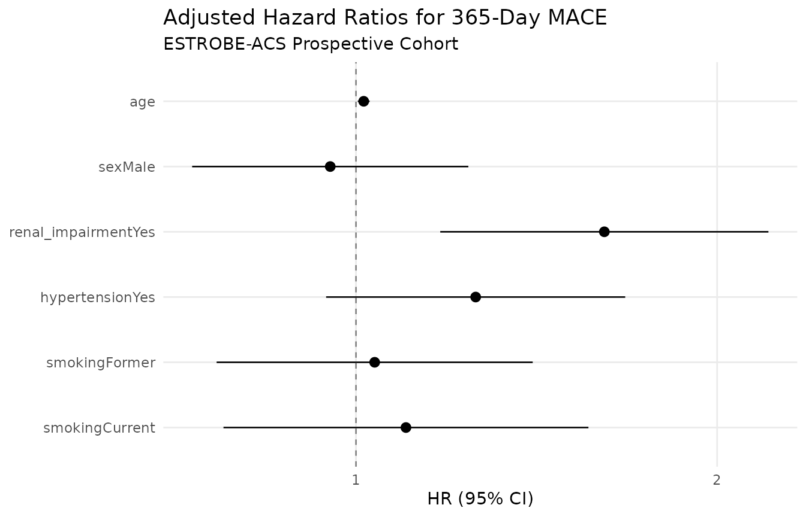

regtab() & survtab(): Multivariable Modeling and Longitudinal Outcomes
Source:vignettes/regression-and-survival.Rmd
regression-and-survival.RmdEpidemiological modeling requires aligning statistical models with study design, estimands, confounding adjustment, and potential data sparsity.
In this guide, we follow the hospital course and 1-year longitudinal
follow-up of the ESTROBE-ACS study. We demonstrate how
regtab() and survtab() allow epidemiologists
to estimate adjusted odds ratios, robust sandwich standard errors, Firth
penalized likelihood for rare clinical conditions, and Cox proportional
hazards for time-to-MACE survival.
1. Study Design & Effect Measure Alignment
Clinical Context & Research Question: In observational cardiovascular research, how does the underlying study design dictate whether the target estimand is a Risk Ratio, Odds Ratio, or Hazard Ratio?
In SimtablR, the study design can be explicitly declared via
design = "cohort", "case_control", or
"cross_sectional". SimtablR aligns the estimand and advises
when a chosen model or measure might deviate from sound epidemiological
practice:
- Prospective Cohort: Risk Ratio (RR) in binary tables or Hazard Ratio (HR) in time-to-event analysis.
- Case-Control: Odds Ratio (OR).
- Cross-Sectional: Prevalence Ratio (PR).
# Declaring cohort design in bivariate analysis resolves to Risk Ratio (RR)
tb_cohort <- tb(
epitabl,
renal_impairment,
adjudicated_acs,
flags = "row",
design = "cohort",
ref = "No"
)
tb_cohort
#> | Adjudicated acute coronary syndrome
#> Renal impairment (eGFR below 60 mL/min/1.73 m2) | No Yes
#> -------------------------------------------------+--------------------------
#> No | 741 (62.6%) 443 (37.4%)
#> Yes | 187 (59.2%) 129 (40.8%)
#> -------------------------------------------------+--------------------------
#> Total | 928 572
#>
#> | Adjudicated acute coronary syndrome
#> Renal impairment (eGFR below 60 mL/min/1.73 m2) | Total
#> -------------------------------------------------+-------
#> No | 1184
#> Yes | 316
#> -------------------------------------------------+-------
#> Total | 1500
#>
#> Renal impairment (eGFR below 60 mL/min/1.73 m2) | RR (95% CI)
#> -------------------------------------------------+-------------------------------
#> No | 1.00 (Ref)
#> Yes | 1.09 (0.94 - 1.27), p = 0.261
#> -------------------------------------------------+-------------------------------
#> Total |2. Multivariable GLMs with regtab()
After adjusting for age, sex, smoking, hypertension, and diabetes, does renal impairment remain independently associated with confirmed acute coronary syndrome?
regtab() fits generalized linear models for binary,
continuous, or count outcomes over a shared predictor formula.
2.1 Logistic Regression & Robust Sandwich Covariance
For binary endpoints, logistic regression yields adjusted Odds Ratios (ORs):
fit_logistic <- regtab(
epitabl,
outcomes = "adjudicated_acs",
predictors = ~ age + sex + smoking + hypertension + diabetes + renal_impairment,
family = stats::binomial("logit"),
robust = TRUE,
predictor_labels = c(
smokingCurrent = "Current Smoker",
hypertensionYes = "Hypertension",
diabetesYes = "Diabetes Mellitus",
renal_impairmentYes = "Renal Impairment"
)
)
fit_logistic
#> Variable Adjudicated acute coronary syndrome
#> Age at index presentation (years) 1.02 (1.02 - 1.03)
#> Sex recorded for clinical assessment: Male 1.29 (1.04 - 1.60)
#> Smoking status: Former 0.97 (0.76 - 1.24)
#> Current Smoker 1.56 (1.18 - 2.07)
#> Hypertension 1.03 (0.83 - 1.29)
#> Diabetes Mellitus 1.73 (1.35 - 2.21)
#> Renal Impairment 0.74 (0.56 - 0.99)
#> N 1500
#> ℹ Methodological guidance
#> Adjusted coefficients for covariates are conditional associations, not
#> automatically total causal effects. Footnote covariate rows or present the
#> pre-specified exposure estimate separately.
#> Run simtablr_guidance("off") separately before printing to hide advice.Robust Standard Errors:
By default, regtab() applies HC0
heteroscedasticity-consistent standard errors
(robust = TRUE). You can request small-sample corrected
estimators such as robust = "HC3" or classical model-based
variance with robust = FALSE.
2.2 Multi-Outcome Regression
Clinical Context & Research Question: Does baseline renal impairment confer similar adjusted risks for acute ACS presentation as it does for 1-year hospital readmission?
In multi-morbidity studies, the same predictor set is frequently
evaluated against multiple clinical outcomes. regtab() fits
all models concurrently and presents a consolidated table:
fit_multi <- regtab(
epitabl,
outcomes = c("adjudicated_acs", "rehospitalized"),
predictors = ~ age + sex + renal_impairment,
family = stats::binomial("logit"),
robust = TRUE,
labels = c(
adjudicated_acs = "Acute Coronary Syndrome",
rehospitalized = "1-Year Readmission"
)
)
fit_multi
#> Variable Acute Coronary Syndrome 1-Year Readmission
#> Age at index presentation (years) 1.03 (1.02 - 1.04) 0.99 (0.98 - 1.00)
#> Sex recorded for clinical assessme… 1.29 (1.04 - 1.59) 0.98 (0.79 - 1.21)
#> Renal impairment (eGFR below 60 mL… 0.84 (0.63 - 1.10) 1.44 (1.09 - 1.90)
#> N 1500 1500
#> ℹ Methodological guidance
#> Adjusted coefficients for covariates are conditional associations, not
#> automatically total causal effects. Footnote covariate rows or present the
#> pre-specified exposure estimate separately.
#> Run simtablr_guidance("off") separately before printing to hide advice.2.3 Model Extraction & Multicollinearity Diagnostics
regtab() objects implement standard broom generics for
downstream inspection:
# Broom-style tidy coefficients
head(generics::tidy(fit_logistic), 5)
#> outcome term estimate conf.low conf.high p.value
#> 1 adjudicated_acs age 1.0247428 1.0153146 1.034258 2.186564e-07
#> 2 adjudicated_acs sexMale 1.2894379 1.0401037 1.598543 2.041653e-02
#> 3 adjudicated_acs smokingFormer 0.9723056 0.7600882 1.243774 8.231079e-01
#> 4 adjudicated_acs smokingCurrent 1.5607218 1.1757763 2.071697 2.066135e-03
#> 5 adjudicated_acs hypertensionYes 1.0335893 0.8255328 1.294082 7.732773e-01
# Model-level statistics including Generalized Variance Inflation Factors (GVIF)
generics::glance(fit_logistic, vif = TRUE)
#> outcome n family link robust vcov method dispersion events
#> 1 adjudicated_acs 1500 binomial logit TRUE HC0 glm NA 572
#> exponentiate converged boundary failed error n_succeeded n_failed max_vif
#> 1 TRUE TRUE FALSE FALSE <NA> 1 0 1.264148
#> max_vif_term
#> 1 renal_impairment3. Sparse Data & Firth Penalized Likelihood Regression
In patients presenting with acute symptoms who are on maintenance dialysis (a rare clinical condition with small event counts), how do we avoid infinite odds ratios caused by sparse-data separation?
When outcomes or exposures are rare, classical maximum likelihood estimation can suffer from quasi-complete separation or small-sample bias, producing unstable Wald confidence intervals or infinite point estimates.
regtab() supports Firth’s penalized likelihood method
via method = "firth" (powered by logistf):
fit_firth <- regtab(
epitabl,
outcomes = "adjudicated_acs",
predictors = ~ age + sex + dialysis,
family = stats::binomial("logit"),
method = "firth"
)
fit_firth
#> Variable Adjudicated acute coronary syndrome
#> Age at index presentation (years) 1.02 (1.02 - 1.03)
#> Sex recorded for clinical assessment: Male 1.29 (1.04 - 1.59)
#> Maintenance dialysis: Yes 0.42 (0.10 - 1.36)
#> N 1500
#> ℹ Methodological guidance
#> Adjusted coefficients for covariates are conditional associations, not
#> automatically total causal effects. Footnote covariate rows or present the
#> pre-specified exposure estimate separately.
#> Run simtablr_guidance("off") separately before printing to hide advice.Firth’s penalized likelihood adds a Jeffreys prior penalty to the score equations, constructing reliable profile-penalized likelihood confidence bounds.
4. Time-to-Event Survival Analysis with survtab()
Over 365 days of follow-up after the index emergency visit, which baseline clinical factors independently predict the hazard of Major Adverse Cardiovascular Events (MACE)?
When follow-up time varies and participants are subject to
right-censoring, survtab() fits Cox proportional hazards
models. In epitabl, participants were followed for MACE
(mace_event) over mace_time_days:
fit_cox <- survtab(
epitabl,
time = mace_time_days,
event = mace_event,
predictors = ~ age + sex + renal_impairment + hypertension + smoking,
design = "cohort"
)
fit_cox
#>
#> Cox Proportional Hazards Model
#> ==============================
#> Time: mace_time_days | Event: mace_event | Events: 220/1500
#>
#> Term HR (95% CI) p-value
#> Age at index presentation (years) 1.01 (1.00, 1.03) 0.010
#> Sex recorded for clinical assessment: Male 0.95 (0.73, 1.24) 0.715
#> Renal impairment (eGFR below 60 mL/min/1.73 m2): Yes 1.61 (1.18, 2.21) 0.003
#> History of hypertension: Yes 1.26 (0.94, 1.68) 0.117
#> Smoking status: Former 1.04 (0.77, 1.40) 0.817
#> Smoking status: Current 1.10 (0.78, 1.56) 0.5914.1 Proportional Hazards Diagnostics & Advisory Audit
survtab() integrates with SimtablR’s advice engine to
audit proportional hazards assumptions:
# Inspect model fit and Schoenfeld residual diagnostics
generics::glance(fit_cox)
#> n events concordance lr_p ties
#> 1 1500 220 0.610503 4.609905e-06 efron
# Review methodological audit rules
advise(fit_cox, audit = TRUE)
#> SimtablR audit
#> Ruleset version: downscale-2026-09-23
#> Checked rules: 0
#> Fired: 0 | Silent: 04.2 Forest Plot Visualization & Methods Generation
survtab() results can be visualized directly with
autoplot():
ggplot2::autoplot(fit_cox) +
ggplot2::labs(
title = "Adjusted Hazard Ratios for 365-Day MACE",
subtitle = "ESTROBE-ACS Prospective Cohort"
)
Finally, as_methods() produces publication-ready text
describing the Cox modeling strategy:
cat(as_methods(fit_cox))
#> Time-to-event associations were estimated with Cox proportional hazards models (Cox, 1972); hazard ratios with 95% Wald CI were reported and proportional hazards were assessed with the Grambsch-Therneau Schoenfeld residual test (1994).